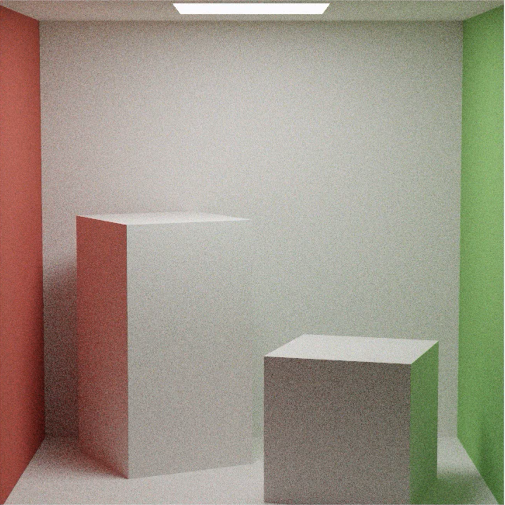
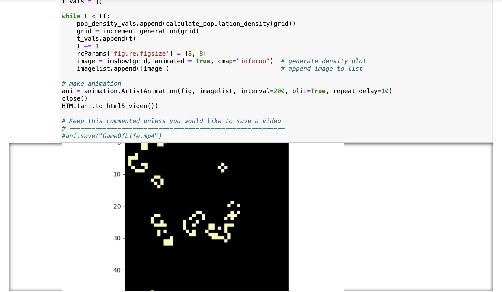

Hi, I'm a second-year undergraduate at the University of Pennsylvania, studying Computer and Information Science in the School of Engineering and Applied Sciences.
I'm currently interested in computer graphics and systems engineering/programming. Recently, I've been working a lot with C/C++ and OpenGL.
In my free time, I like to write, play oboe, watch tennis, and go on long walks.
Projects
Miniature Minecraft Clone
October 2023 - December 2023
A group project inspired by the likes of Minecraft, using the OpenGL pipeline, and programmed primarily in C++ and GLSL (credits shown at end of video).
Features Responsible:
Player physics, on land and in water
Player mechanics, such as placing/removing blocks
Cave generation using 3D Perlin/Worley Noise
Water waves with surface normal vector calculations
Lambertian diffuse and specular highlights on water
Fresnel effect
Togglable still-scene water reflections using reflection mapping
Underwater post-process shaders using FrameBuffers
Monte-Carlo Path Tracer
January 2024 - Present

A project built upon approximating the Light Transport Equation in order to render scenes using realistic light physics.
Scenes are rendered on the GPU using OpenGL/GLSL. GUI and GL window created using C++ and Qt.
Features Responsible:
Naïve Lighting Estimation
Use of Gamma Correction and the Reinhard Operator
Implementation of various light sources - i.e. point light, spotlight, etc.
Direct Lighting Estimation
Multiple Importance Sampling (MIS)
Multiplayer and Singleplayer Chess (against Computer)
November 2022 - August 2023
A classic game of chess, written in Java, with Swing and AWT libraries. Two gameplay modes supported.
Either play locally with a friend (multiplayer), or play singleplayer against a beginner chess bot.
Autonomous decision making implemented using Minimax algorithm. Also researched Monte Carlo Tree Search
and Alpha-Beta pruning for greater max-depth board state searching.
Features:
Minimax algorithm for optimizing board state
Experimented with various board state evaluation functions to see which heuristics
influenced game outcome the most
Game logic properly implemented (checkmate, stalemate, en passant, castling, etc.)
Object-oriented design of all chess pieces and their various rules/functions in the game
Possible move highlighting when piece on board is selected
Java Swing and AWT libraries used for the GUI and graphics
Created pixel art sprites to represent the chess pieces
Double Pendulum Simulation and Presentation using Lagrangian Mechanics
January 2021 - March 2021
A simulation of the double pendulum system, a system that is known for its chaotic nature. In addition,
its difficulty in being analyzed by a classical Newtonian model invites the application of Lagrangian mechanics
for its study and examination. A presentation on the project, and the physics content involved with its
implementation is provided above.
Features:
Differential equation solving/estimation with Runge-Kutta method
Presents classically difficult problem in terms of Lagrangian mechanics
Animation and graphics programmed using Java
Presentation given to the Pennsylvania Junior Academy of Science (PJAS)
Studies of Computational Physics using Python
January 2023 - May 2023

A collection of programs written in Python meant to simulate, study, or visualize various physical phenomena. Or, to
introduce algorithms/computational methods that can aid with studying or solving topics/problems in physics. Python
code written in Jupyter Notebook.
Features:
Integral approximation, i.e. for Black-body radiation
Linear fitting, wave interference, matrix multiplication algorithms
Golden Ratio Search for extrema of a function
Random Number Generation and Brownian Motion
Runge-Kutta method and solving differential equations computationally
Visualization of physical phenomena (i.e. electric field of point charges, orbit of moon, etc.)
Space Invaders Clone ("Starfighter")
October 2019 - December 2019
A clone of the classic space invaders game, with extra enemies boasting unique gameplay features. Most notable
are the "Splitterbugs," which propagate their juvenile alien spawn into space after they are destroyed.
Features:
OOP principles applied to implement four unique alien types with their own gameplay features - i.e. different
movement patterns, interaction with being shot, etc.
Animations and graphics implemented in Java
Sprites made from scratch using pixel art software